Tubo Certo — kit de interface
Assets SVG escaláveis, com fundo transparente, prontos para integração no projeto.
Tubos e estados
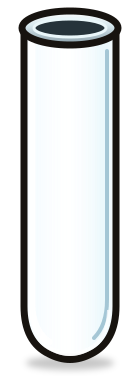
Tubo de vidro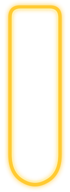
Selecionado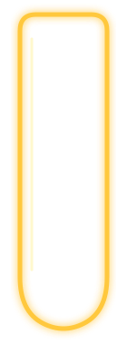
Completo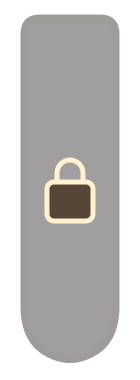
BloqueadoQuadradinhos coloridos
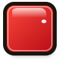
RED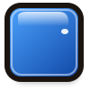
BLUE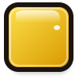
YELLOW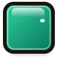
GREEN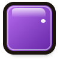
PURPLE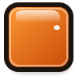
ORANGE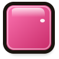
PINK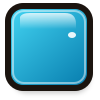
CYAN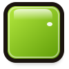
LIME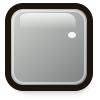
GRAYExemplo de composição
O exemplo é demonstrativo. Na implementação, o Claude deve renderizar cada camada como um elemento independente e sobrepor o SVG do tubo para manter as peças clicáveis.
Notas de implementação
• Os SVGs têm fundo transparente e podem ser redimensionados sem pixelização.
• Use os segmentos coloridos como elementos HTML/CSS para suportar toque, animação e acessibilidade.
• Use o tubo de vidro como camada visual superior; mantenha os eventos de toque nos elementos de jogo.
• A imagem de referência está em reference/mockup-original.png e serve apenas como inspiração, não como fundo da tela.